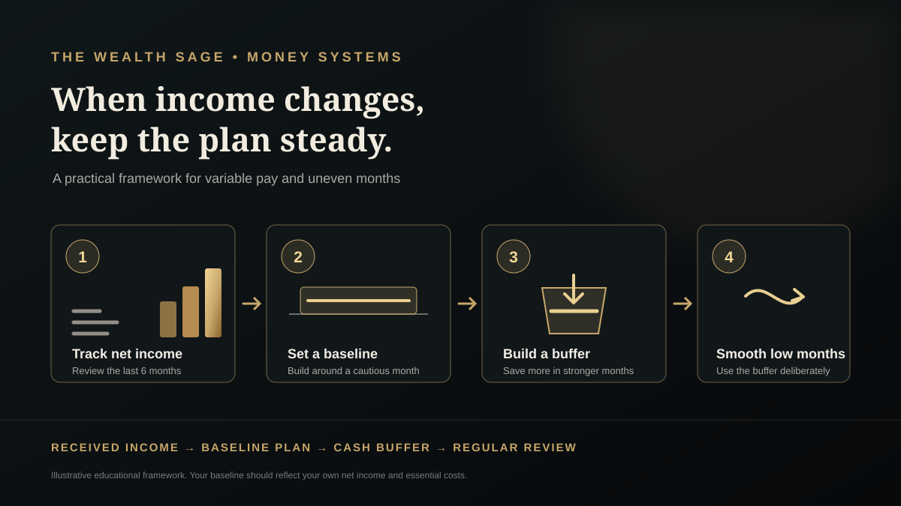
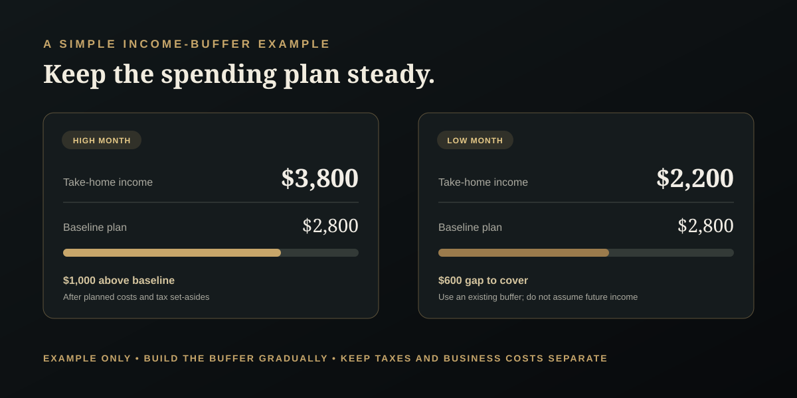

Irregular income is common for freelancers, contractors, salespeople, commission-based workers, people who earn tips, shift workers, and anyone whose hours or workload change. The challenge is not simply knowing how much you earn. It is knowing how much you can safely commit to spending before the next payment arrives.
A useful budget for variable income has two jobs: cover essential commitments in a lower-income month and give extra income from stronger months a clear purpose. It should not depend on every month being a good month.
What Counts as Irregular Income?
Income is irregular when the amount or timing changes enough that you cannot rely on the same paycheck arriving on the same date every month. Examples include:
- Freelance or contract payments that arrive when projects are completed.
- Sales commissions, tips, bonuses, or performance-based pay.
- Hourly work with changing shifts or weekly hours.
- Seasonal work, short-term contracts, or income from several small sources.
- A household that combines one stable paycheck with another variable source.
The same budgeting principles can help even when you have a regular salary but your pay dates and bill dates do not line up. In that case, timing—not necessarily the total amount of income—may be the main problem.
Step 1: Budget With Take-Home Income, Not Gross Income
Start with the amount that is actually available for personal spending. That usually means income after payroll deductions. If you are self-employed or receive payments before taxes and business costs are settled, do not treat every deposit as personal spending money. First account for business expenses and the tax amount you need to reserve under the rules that apply where you live.
Keep that tax reserve separate from the money used for rent, groceries, savings, and flexible spending. Tax obligations vary by country, income type, and personal circumstances, so this guide does not prescribe a universal tax percentage.
Step 2: Find a Conservative Monthly Baseline
Review at least the last six months of take-home income. Write down what actually arrived in each month, not what you invoiced, expected, or hoped to receive. Penn State Extension suggests using either the lowest monthly income in the previous six months or the six-month average as an estimate for irregular income. A lower recent month can be a useful cautious starting point when your priority is making essential commitments sustainable.
Here is an illustrative six-month record:
| Month | Take-home income |
|---|---|
| Month 1 | $2,800 |
| Month 2 | $3,400 |
| Month 3 | $3,100 |
| Month 4 | $4,000 |
| Month 5 | $2,900 |
| Month 6 | $3,800 |
The lowest month in this example is $2,800. The six-month average is about $3,333. A cautious starting baseline could be $2,800—not because that number is guaranteed, but because the plan should not require a stronger month just to cover ordinary commitments. Review the history for unusual one-time events and update the baseline when your work pattern changes.
Step 3: Build a Budget Around the Baseline
Now give the baseline a job. Start with essential costs and minimum obligations. Then include planned irregular expenses, a modest amount for flexible spending, and a contribution toward your income buffer when the numbers allow it.
This example assigns a $2,800 baseline. The amounts are illustrative, not recommended targets; replace them with your own bills and priorities.
| Budget category | Monthly plan |
|---|---|
| Housing | $1,150 |
| Utilities and phone | $220 |
| Groceries | $400 |
| Transportation | $180 |
| Insurance | $160 |
| Minimum debt payments | $140 |
| Sinking funds for known bills | $150 |
| Flexible spending | $200 |
| Income buffer contribution | $200 |
| Total assigned | $2,800 |
If your essential expenses alone exceed the conservative baseline, do not hide the shortfall by using an optimistic average. Rework the plan: identify which costs can be reduced or changed, protect the most important bills first, and consider whether the income pattern or work arrangement needs a longer-term adjustment. A budget cannot make an income gap disappear, but it can make the gap visible early enough to respond.
Step 4: Use a Cash-Flow Calendar
A monthly total can look healthy while the timing still causes trouble. For example, a client may pay on the 18th, while rent is due on the 1st. A cash-flow calendar helps you plan around the dates money is expected to arrive and bills must be paid.
- Write down the balance you have available at the start of the week or month.
- Record each payment when it actually arrives or when it is reliably scheduled.
- Add bill due dates and essential spending dates.
- Subtract spending from the available balance and carry the ending balance into the next week.
- Check for weeks when the balance may be too low and plan before the due date.
The Consumer Financial Protection Bureau's cash-flow budget tool uses this rolling approach: start with the available balance, add income, subtract expenses, and carry the ending balance into the next week. The CFPB also notes that changing a bill's due date may help align payments with income timing when a provider allows it.
Do not count an invoice as available cash just because you sent it. Until the money arrives, keep it in a separate forecast so an expected payment does not accidentally fund today's spending.
Step 5: Build an Income Buffer in Stronger Months
An income buffer is money set aside to smooth the difference between higher- and lower-income months. It is not extra spending money. It helps you avoid treating every high month as your new normal.
Return to the example. If take-home income is $3,800 and the baseline plan is $2,800, there is $1,000 above the baseline. After accounting for any additional obligations, that extra can strengthen the income buffer, fund planned irregular expenses, reduce expensive debt, or support another priority. In a later month when take-home income is $2,200, the gap against the $2,800 plan is $600. An existing buffer can cover that gap if the money has already been saved and is available.

Choose an initial buffer target that fits your income volatility and essential costs. One month of the baseline can be a useful first milestone for some households, but it is not a universal rule. If your work is highly seasonal, you may need a larger reserve and a longer planning horizon. If you are starting from zero, build gradually rather than transferring so much that you cannot cover current essentials.
Step 6: Keep Three Different Savings Jobs Separate
Variable-income budgeting becomes clearer when every reserve has a specific purpose:
- Income buffer: smooths expected variation in the amount or timing of earnings.
- Sinking funds: prepare for known expenses such as annual insurance, car maintenance, or planned travel.
- Emergency fund: protects against genuine unexpected disruptions, such as an urgent repair or loss of work.
These reserves may sit in one suitable savings account with clear labels, or in separate accounts if that makes them easier to manage. The important part is not spending the same dollars twice. A planned annual bill should not quietly consume the money you believed was protecting you from a true emergency.
Step 7: Decide What Happens in a Very Low Month
Even a conservative baseline can be exceeded by a bad month. Decide in advance how you will respond if income falls below it:
- Protect essentials first: housing, basic utilities, food, necessary transport, medicine, and required minimum payments.
- Pause or reduce flexible categories and optional goals before missing a critical bill.
- Use the income buffer only for the gap it was built to cover.
- Contact a bill provider or creditor before the due date if you need to discuss a payment arrangement.
- Update your forecast when a client payment is delayed or work hours change.
If low months become the pattern rather than the exception, revisit the baseline. The correct response may be to reduce recurring commitments, diversify income sources, adjust pricing or hours, or seek local support—not to rely indefinitely on a shrinking buffer.
A Weekly Routine for Irregular Income
You do not need to rebuild the entire budget every time a payment changes. Use a short weekly review:
- Check what money has actually arrived.
- Update the next four weeks of bill and income dates.
- Compare the current balance with the cash-flow calendar.
- Move money to the tax reserve or business account first when applicable.
- Fund essentials, planned expenses, and the income buffer according to the current plan.
- Adjust flexible spending if the next few weeks look tight.
Once a month, review the last six months again. If income has become more stable or your essential costs have changed, update the baseline rather than following an outdated number.
Common Mistakes to Avoid
Budgeting from the best month
A strong month is not proof that the same amount will arrive next month. Build essential commitments around a conservative, evidence-based baseline.
Using gross income as if it were spendable
Taxes, business costs, and deductions may reduce what is actually available. Separate them before deciding what you can spend personally.
Spending every extra dollar in a strong month
Give above-baseline income a job before increasing recurring expenses. Build the buffer and fund known future costs first.
Ignoring timing
A monthly budget can balance on paper and still run short before payday. Use a cash-flow calendar to see the order in which money arrives and leaves.
Confusing the income buffer with emergency savings
An income buffer smooths a known variable-pay pattern. An emergency fund is for unexpected financial shocks. Keep the purposes clear.
FAQ: Budgeting With Irregular Income
Should I use my lowest month or my average income?
Both can be useful, but they serve different purposes. A lower recent month can create a cautious baseline for essential commitments. The average can help you understand the broader pattern. Compare both, examine unusual months, and avoid committing essential spending to income that has not arrived.
How many months of income should I review?
Six months is a practical starting point used in Penn State Extension's guidance for estimating irregular income. If your work is seasonal or strongly affected by annual cycles, also review a longer period so one season does not misrepresent the year.
How large should an income buffer be?
There is no universal amount. Consider how much your take-home income changes, how predictable your work is, how large your essential commitments are, and how long it could take to replace a delayed payment. Start with a manageable milestone and build it over time.
Can I use zero-based budgeting with irregular income?
Yes. Assign the money that has actually arrived to bills, essentials, planned expenses, savings, and flexible spending. Do not assign expected but unpaid income as though it were already available. The method is explained in our guide to Zero-Based Budgeting.
Is an income buffer the same as an emergency fund?
No. An income buffer is intended to smooth predictable ups and downs in pay or payment timing. Emergency savings are intended for unexpected events that disrupt the normal plan. Your financial situation may require both.
What if my income is too low to cover essentials?
Prioritize the most critical costs, review expenses that can be changed, and contact providers before missing payments where possible. If the shortfall persists, the budget needs a structural adjustment; a spreadsheet cannot solve a persistent income shortfall by itself.
Put the System Into Practice
The key is not to predict every payment perfectly. It is to avoid making long-term spending commitments based on a temporary high month. Use the income you have received, plan around the timing of bills, and give stronger months a role in protecting the weaker ones.
If a spreadsheet makes it easier to review your income and expenses, the Smart Money Starter Kit includes an Excel budget tracker and a guided workbook. It is a general budgeting tool, not a dedicated variable-income forecasting app.
Sources & Further Reading
Penn State Extension — Budgeting with Irregular Income
Consumer Financial Protection Bureau — Your Money, Your Goals: Cash-Flow Budgeting
Consumer Financial Protection Bureau — Your Money, Your Goals Toolkit
FDIC — Money Smart for Adults: Income and Expenses
Educational information only. Examples are illustrative and use U.S. dollars for arithmetic clarity. Tax rules, benefits, debt terms, and financial products vary by country and personal circumstances.